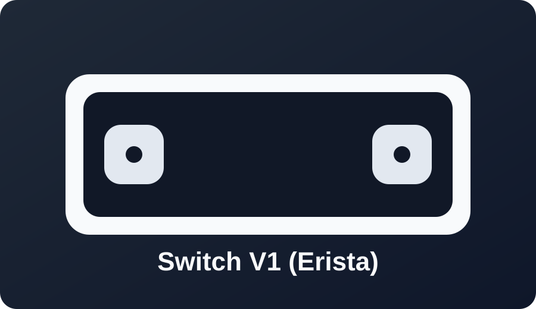
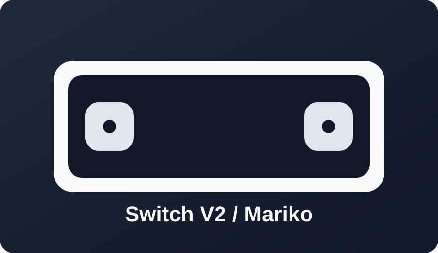

Nintendo Switch

CYMI uses a checker-style flow inspired by SSNC, adapted for this site and expanded for all Nintendo families.
Serial first
Firmware aware
Model specific
Open Switch Wizard
V1 serial check
Type your serial number to compare against known serial ranges.
Format example: XAW10012345678.
Enter a serial and click check.
Guides and more info
V2 guidance

V2 and newer Switch models require hardware modification.
Go to V2 instructions